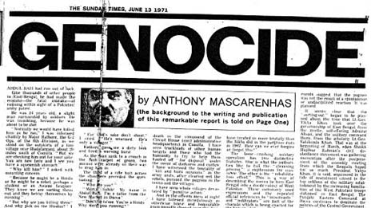
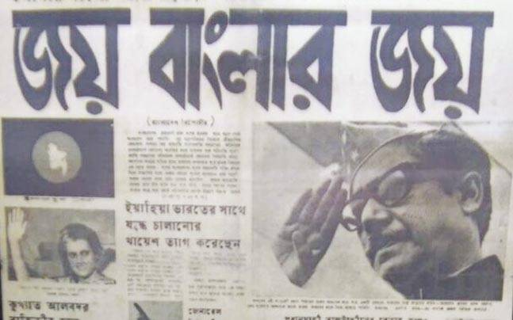
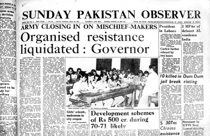

Documents
A catalog of historical documents related to the Liberation War.


Detailed View Documents
A catalog of historical documents related to the Liberation War.

1971 War International News
On 13 June 1971, an article in the UK's Sunday Times exposed the brutality of Pakistan's suppression of the Bangladeshi uprising. It forced the reporter's family into hiding and changed history..

1971 War International News
On 13 June 1971, an article in the UK's Sunday Times exposed the brutality of Pakistan's suppression of the Bangladeshi uprising. It forced the reporter's family into hiding and changed history..
